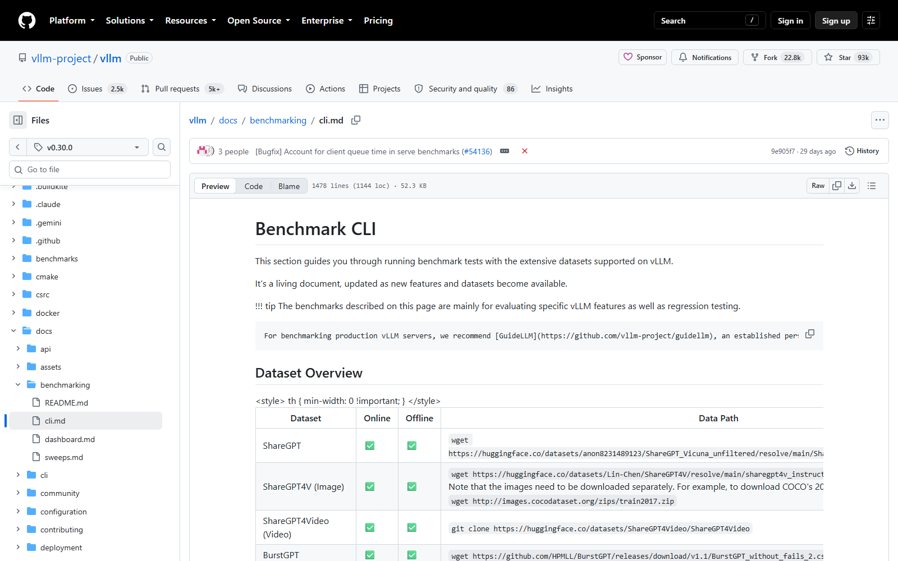
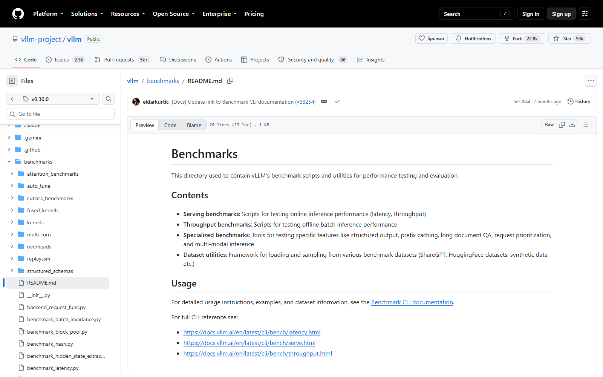

OSS PROJECT INTRO · VLLM 系列第 4 期：实战 · 压测与容量
"一块显卡到底能扛多少并发？"——这是引入 vLLM 后第一个要向老板交代的数字。上一期你看懂了精算师的原理，这期继续，用官方压测工具 vllm bench serve 给一块卡做体检：先学会发压与读数（吞吐、首字延迟、逐字延迟、P99），再搞懂显存的三本账——权重固定开销、KV 缓存池、运行时激活，最后落到两个最实用的决策：--max-model-len 怎么取舍、下一张卡怎么选。本期不堆指标名词，每一步都回答"这个数字决定你账单上的哪一行"。（基于 v0.30.0，2026-09-30 核对）
一块卡能扛多少并发，答案藏在显存的三本账里。第一本，权重账：模型参数 × 每参数字节数，BF16 就是 2 字节——7B 模型约 14 GB，这笔钱是固定房租，服务一起就得付。第二本，KV 缓存账：第 2 期讲过分页管理，vLLM 按显存水位（默认 0.92）圈出一整块池子，扣掉权重和激活后全给 KV 缓存——这笔是弹性大头，并发的天花板由它决定。第三本，激活账：前向计算过程中的中间张量，随批次大小波动，通常只占几个 GB，但它是水位不能开满 1.0 的原因之一。三本账的关系一句话：水位圈出总额，权重是房租，激活是水电，剩下全给 KV 池；池子 ÷ 单条请求份额 = 并发上限。压测的意义，就是把这个纸面公式校准成真实数字。
vLLM 自带压测工具，新版本已收编成官方 CLI 子命令 vllm bench serve（老仓库里的 benchmark_serving.py 脚本同源）。用法两步：先把被测服务起好，再发压：
# 1) 起被测服务（参数按你生产口径配）
vllm serve Qwen/Qwen2.5-7B-Instruct --max-model-len 8192
# 2) 另开终端发压：1000 条请求，限速每秒 5 条到达
vllm bench serve \
--backend openai --host 127.0.0.1 --port 8000 \
--model Qwen/Qwen2.5-7B-Instruct \
--dataset-name random --random-input-len 512 --random-output-len 256 \
--num-prompts 1000 --request-rate 5几个关键参数的含义：--dataset-name random 用随机文本造请求（默认值），要贴近真实对话可换 sharegpt 数据集；--num-prompts 是总请求数（默认 1000）；--request-rate 是到达速率，默认 inf 表示所有请求零点齐发——那是"极限压满"口径，想模拟生产到达规律就给个数字（泊松过程）；--max-concurrency 能直接卡住同时在途的请求数。压完结果直接打在终端，也可 --save-result 存档。

来源注记——github.com/vllm-project/vllm 仓库 docs/benchmarking/cli.md（v0.30.0 tag，2026-09-30 截图核对）；参数名、默认值与到达过程（泊松/伽马）口径同 docs.vllm.ai CLI 文档。
压测输出一屏数字，工程上只盯四个。请求吞吐（Request throughput）：每秒完成几条请求，直接决定一块卡值多少钱；TTFT：首 token 延迟，用户按下回车到看见第一个字的等待，交互体验的生死线；TPOT / ITL：每 token 生成间隔，决定"字往外蹦"的流畅感；成功请求数：压满时出现的失败请求是过载信号，不能装看不见。四者关系遵守一根铁律：吞吐与延迟是跷跷板。到达速率从低往高压，吞吐先跟着爬升、然后走平（卡饱和），而 TTFT 与 P99 延迟会先缓慢爬升、在饱和点附近垂直起飞——容量规划要找的就是"吞吐已接近上限、延迟还没起飞"的那个工作点，而不是极限吞吐数字。
实操建议：阶梯式发压——从生产预估速率的一半开始，每轮加倍（限速 5、10、20、inf 各跑一轮），记录每档的吞吐与 P99，画出你这块卡自己的两根曲线；生产水位建议压在"P99 延迟起飞点"的一半流量以内，给流量毛刺与重试风暴留缓冲。
把第 01 节的框架变成可计算的算术。KV 缓存每 token 占用 = 2（K 与 V）× 层数 × KV 头数 × 头维度 × 每元素字节数。以 Qwen2.5-7B 这类 GQA 架构为例（32 层、8 个 KV 头、头维度 128、BF16 两个字节），每 token 约 128 KB；8K 上下文（8192 token）的单条请求约吃 1 GB KV。一块 80 GB 的卡按 0.92 水位圈到约 73.6 GB，扣权重约 15 GB、激活预留数 GB，KV 池约 55 GB——理论上限约 55 条 8K 并发（示例为纸面算术，真实上限以你自己的压测为准）。这个算法的工程价值在于三个旋钮各自怎么动：
来源注记——KV 占用公式与层数/头数参数出自模型架构公开配置与 PagedAttention 论文口径（2026-09-30 核对）；0.92 默认水位见 docs.vllm.ai CLI 文档；示例算术仅作方法演示，非实测数据。
把三本账折成选卡与调参的决策表（按 2026-09-30 官方支持清单口径，T4 至 B200 均在列）：
| 场景 | 推荐起步 | 理由与关键参数 |
|---|---|---|
| 验证与演示 | T4（16 GB） | 算力 7.5 达标、便宜易租；7B 以下小模型 + 量化版，压测口径全流程先跑通 |
| 小团队在线服务 | L4 / A10（24 GB） | 7B 量化 + 4K~8K 上下文能开出几十路并发；盯 TTFT 调 --max-model-len |
| 生产主力 | A100/H100（40/80 GB） | 显存与带宽双大，KV 池给足；H 卡优先 FP8，权重与 KV 双省 |
| 超大模型 | 多卡 TP / B200 | 70B+ 用 --tensor-parallel-size 切卡，或新一代卡单卡扛 |
两条取舍纪律。其一，上下文长度按业务真实分布定：日志里 P95 对话长度若是 2K，把 --max-model-len 拉到模型上限 128K 只会白白稀释并发——上限给"长尾留个门"，日常水位靠业务分布说话。其二，换卡先换算法：量化、压上下文、KV 量化三个旋钮都是零硬件成本的扩容，压测确认硬件真成瓶颈后再谈采购——采购申请里附上两根曲线，比任何文字都有说服力。

来源注记——github.com/vllm-project/vllm 仓库 benchmarks 目录（v0.30.0 tag，2026-09-30 截图）；显卡支持清单见 docs.vllm.ai Installation → GPU 页 Requirements。
每题点击选项立即反馈 · 共 3 题
1. vllm bench serve 的 --request-rate 默认值是？
2. 压测发现 P99 延迟随速率"垂直起飞"，说明什么？
3. 业务 P95 对话只有 2K token，却按模型上限 128K 配 --max-model-len，后果是？
先算账再谈判。权重账：7B BF16 约 14 GB，量化 4bit 约 4 GB——这笔没有悬念。KV 账：GQA 架构 7B 每 token 约 128 KB（FP16 KV），单条 8K 上下文约 1 GB；100 路并发需要约 100 GB 的 KV 池。结论一：即使 H100 80 GB 加 4bit 权重（KV 池约 70 GB），100 路 8K 也差一口气——纸面就不成立，除非动三个旋钮。旋钮一，压上下文：如果业务 P95 对话实际 2K，按 4K 上限配，单条份额减半，70 GB 池能开约 35→70 路，逼近目标；旋钮二，KV 量化：FP8 缓存池等效翻倍，80 GB 卡也能摸到 100 路 8K；旋钮三，两卡 TP：池子合并翻倍，稳稳达标但成本翻倍。结论二：需求不是"行不行"，而是"每一项都要花钱"——100 路是钱、8K 是钱、7B 也是钱，三者乘起来的账单要业务方签字。谈判策略：把"8K 上限"改问成"P95 多长"（大概率 2K 出头），把"100 路并发"改问成"峰值 QPS 与到达分布"（大概率均值 5、峰值 30），需求瞬间从"不可能"变成"一张 L4 都可能够"。容量谈判的本质：用分布数据替代最坏假设，用三本账把模糊需求翻译成采购清单。最后记得留半倍余量——你压测出来的数字是均值，流量不认识均值。
这颗雷的引线叫开环压测（open-loop）。零点齐发（--request-rate inf）意味着所有请求无视服务状态同时涌入，服务只能排队硬扛——测出的是"极限姿势下的最高吞吐"，对应延迟曲线早已垂直起飞的那一点。雷一：工作点错位。生产流量是闭环的，用户等首字、超时重试；把 20 路当承诺，真实流量 18 路时 TTFT 可能已经数秒起步，体验崩了吞吐数字却"没超承诺"。雷二：重试风暴放大器。闭环系统里慢请求触发用户重试，重试进一步推高到达速率——开环压测永远测不出这个正反馈，它只存在于生产。雷三：口径不可复现。零点齐发的排序有随机性，两次压测数字对不上，容量评审会变成吵架现场。正确姿势：容量承诺用限速阶梯压测的结论给出——"到达速率 X 以内，P99 首字 Y 秒、吞吐 Z 路，成功率 100%"三件套同时报；把"齐发极限"只用于了解硬件天花板，不进入承诺文档。一句话：容量不是吞吐数字，是"速率-延迟-成功率"三元组在工作点上的取值——把这个口径写进容量文档，你在第一次大促前就赢了一半。
带走这五句话：
vllm bench serve，--request-rate 默认齐发是极限口径，生产口径要限速；下期预告：第 5 期《架构与源码导读》收官——打开 vLLM 仓库画目录地图，跟着一条请求走进引擎：LLM 类与 serve 双入口、EngineCore 的调度循环、块池与注意力后端，最后给一份工程师的读码路线。
Primary source：vllm bench serve 官方文档 与 仓库 benchmarks 目录——本期工具用法与参数口径出自官方（v0.30.0，2026-09-30 核对）；示例算术仅作方法演示。